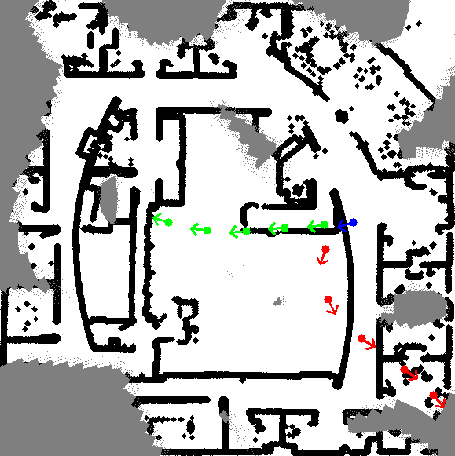
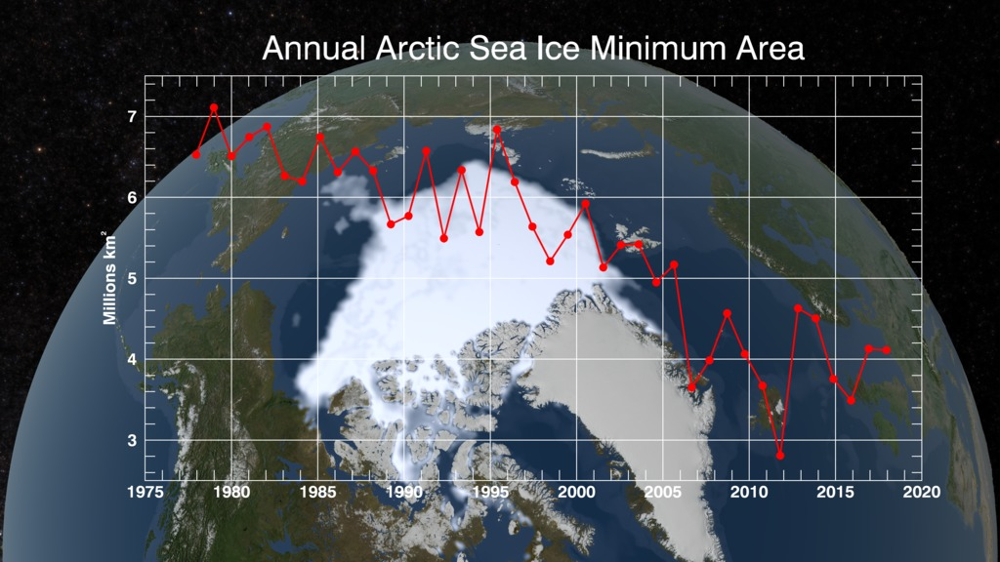

Current Projects
Active Simultaneous Localization and Mapping (SLAM)
|  |
Simultaneous Localization and Mapping (SLAM) is a probabilistic inference technique allowing an autonomous robot to estimate its location from onboard camera and inertial sensors and construct a map of its surroundings in real time. SLAM research has been instrumental in allowing robotics to transition from the factory floor to numerous applications in unstructured environments, such as autonomous transportation, structure inspection, mining, environmental monitoring, and many more. The traditional SLAM algorithms operate in a passive estimation setting, where data is provided to the system but its acquisition is not optimized. Autonomous systems employing SLAM see but do not look. Our central research objective is to develop a novel learning algorithm for SLAM by actively optimizing the robot’s trajectory to obtain more informative data and minimize uncertainty in its environment model.
Website |
Learning and Control for Safety-Critical Systems in Robotics
Past Projects
Control/Estimation of Free Boundary PDEs
|
|
Stefan problem has been known as a thermodynamic model of liquid-solid phase transition since Josef Stefan's work in 1891. While a numerical analysis of the Stefan problem has been considered intensely, the control and estimation problems have been studied relatively fewer in spite of its importance in practical science and engineering. The Stefan problem is governed by a Partial Differential Equation (PDE) defined on a time-varying spatial domain that is dependent on the PDE state, which makes the system a nonlinear "free boundary PDE". The central goal of my theoretical work is to develop a boundary control and estimation design for the Stefan problem (and general free boundary PDEs) via "backstepping design". The control objective is to melt a desired amount of the material, namely, to drive the liquid-solid interface position to a desired setpoint. We also conduct experiments of melting paraffin of an energy storage material to test and validate the designed feedback control algorithm.
|
Optimization and Learning by Extremum Seeking
|
|
Since 1920s, Extremum Seeking (ES) has been widely utilized as a real-time model-free optimization arising in adaptive control. A theoretical proof of the stability of ES for general nonlinear dynamics was developed in 2000. One of our interets is in developing new ES algorithms for more complex dynamics governed by PDEs or involved with time-delays. Another interest is in utilizing ES algorithm for iterative-learning of unknown parameters as a data-driven approach.
|
Additive Manufacturing
|
|
Additive Manufactuing (AM), also known as 3D-printing, is a state-of-the-art manufacturing technology which has emerged rapidly in the recent decade as observed from the growth in global market. AM's impact relies on products and supply chains in numerous industries such as automobiles, consumer electronics, aerospace, medical devices, etc. We study both of two popular materials dealt in AM, that are, polymer and metal. In polymer AM, we focus on screw extrusion process whichi enables a fast printing, and build a control system that stabilizes the filament production rate. In metal AM, Selective Laser Sintering (SLS) is the most common technique of the powder-bed fusion AM processes that fabricate structurally
sound three-dimensional products from a computer-aided design (CAD) models. We design robust control system for laser power that enables a desired geometry of the melt pool in layer-by-layer process of SLS-based metal AM.
|
Battery Management Systems
|
|
|
Climate Dynamics and Arctic Sea Ice
|  |
Arctic sea ice has been studied intensively in the field of climate science. One of the main reasons is due to ice-albedo feedback which influences climate dynamics due to the high reflectivity of sea ice. The other reason is the rapid decline of the Arctic sea ice extent in the recent decade shown in several satellite observations (see left figure reported by NASA). To predict the future sea ice extent, the online estimation of the sea ice temperature profile is crucial. My goal is to develop an observer algorithm to estimate temperature profile for the Arctic sea ice in a global climate model via some available measurements of sea ice from satellite data.
|